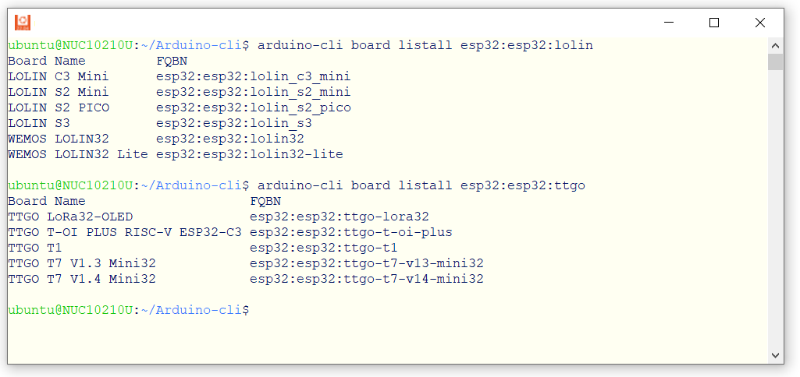

การใช้งาน Arduino CLI#
Keywords: Arduino, Arduino CLI
▷ Arduino CLI#
บทความนี้นำเสนอตัวอย่างการใช้โปรแกรม Arduino CLI (Command-Line Interface) โดยปรกติแล้ว การเขียนโปรแกรม Arduino Sketch ผู้ใช้ส่วนใหญ่ ก็จะเลือกใช้ซอฟต์แวร์ Arduino IDE ทั้งแบบ Desktop (offline) และ Cloud-based (online) หรือ VS Code IDE + PlatformIO extension เป็นต้น
Arduino CLI เป็นโปรแกรมอีกตัวเลือกหนึ่ง ที่มีลักษณะการใช้งานแบบ Command-Line Tool สามารถนำมาใช้เพื่อสร้างโปรเจกต์ใหม่ คอมไพล์โค้ดและอัปโหลดไฟล์ไบนารีไปยังบอร์ดไมโครคอนโทรลเลอร์ได้ สามารถค้นหาหรือติดตั้ง Arduino Cores และโปรแกรมต่าง ๆ ที่เกี่ยวข้อง รวมถึงค้นหาและติดตั้งไลบรารีสำหรับ Arduino เป็นต้น
โปรแกรมนี้ใช้ได้กับระบบปฏิบัติการ เช่น Windows, Linux และ Mac OSX เป็นต้น การใช้งานโปรแกรมนี้ ไม่มี GUI และเหมาะสำหรับการเรียกใช้งานใน Terminal หรือ Console หรือแบบรีโมท เช่น ผ่าน Secure Shell หรือเรียกใช้งานแบบ Scripting เพื่อให้ทำงานแบบอัตโนมัติ เมื่อเรียกใช้ไฟล์สคริปต์ที่เกี่ยวข้อง
▷ การติดตั้งและใช้งาน Arduino CLI#
ขั้นตอนการติดตั้งและใช้งาน Arduino CLI สามารถศึกษาได้จาก
https://arduino.github.io/arduino-cli/latest/installation/
สำหรับผู้ใช้ Linux / Ubuntu มีขั้นตอนดังนี้ (ทดลองใช้ Arduino CLI เวอร์ชัน v0.30)
# Install from github
$ curl -fsSL https://raw.githubusercontent.com/arduino/arduino-cli/master/install.sh | sh
# Update the $PATH variable
$ export PATH="$PATH:`pwd`/bin"
# Show the version of Arduino CLI
$ arduino-cli version
arduino-cli Version: 0.30.0 Commit: 83700ca2
ถ้าต้องการดู Help Messages หรือข้อความแสดงรูปแบบการใช้คำสั่งและตัวเลือกของโปรแแกรม ก็มีตัวอย่างดังนี้
# Show help messages
$ arduino-cli help core
ถ้าใช้ Windows ก็สามารถดาวน์โหลดไฟล์ไบนารี (.exe) มาใช้งานได้ง่าย โดยดาวน์โหลดมาจากไฟล์ .zip
เช่น arduino-cli_latest_Windows_64bit.zip
เมื่อดาวน์โหลดไฟล์ .zip มาแล้วแตกไฟล์ เช่น สร้างเป็นไดเรกทอรีใหม่ชื่อ C:\Tools\arduino_cli-0.30.0
ซึ่งภายในมีไฟล์ arduino_cli.exe
จากนั้นก็ให้ทำคำสั่งใน Windows PowerShell เพื่อเพิ่มรายการไดเรกทอรีสำหรับไฟล์ไบนารี arduino_cli.exe ตามตัวอย่างดังนี้
$env:Path += ";C:\Tools\arduino-cli_0.30.0"
$env:Path -split ';'
แล้วทำคำสั่งเพื่อเรียกใช้โปรแกรม
▷ ไฟล์สำหรับการตั้งค่าเพื่อใช้งาน#
ก่อนเริ่มต้นใช้งาน แนะนำให้สร้างไฟล์สำหรับตั้งค่าใช้งาน (Configuration File)
ซึ่งเป็นไฟล์แบบ YAML ( "YAML Ain't Markup Language")
ถ้าเป็น Ubuntu Linux ไฟล์นี้จะถูกสร้างขึ้นและเก็บไว้ในไดเรกทอรี $HOME/.arduino15/
ภายใต้ไดเรกทอรีของผู้ใช้ (User's Home Directory)
# Create a config file written to $HOME/.arduino15/arduino-cli.yaml
$ arduino-cli config init
แต่ถ้าเป็น Windows จะได้ไฟล์ "$($env:UserProfile)\AppData\Local\Arduino15\arduino-cli.yaml"
เมื่อทำคำสั่งแล้ว จะได้ไฟล์ใหม่ที่มีชื่อว่า arduino-cli.yaml และลองแสดงตัวอย่างข้อความในไฟล์ดังกล่าว
(แสดงเฉพาะสองบรรทัดแรก)
# Show the first two lines of $HOME/.arduino15/arduino-cli.yaml
$ cat $HOME/.arduino15/arduino-cli.yaml | head -n 2
board_manager:
additional_urls: []
ถ้าต้องการจะเพิ่มรายการ Arduino Cores เช่น สำหรับบอร์ดไมโครคอนโทรลเลอร์
ESP8266 และ ESP32 มีดังนี้ โดยเพิ่มในส่วนที่มีชื่อว่า
board_manager: ในห้วข้อย่อย additional_urls:
# Add 3rd party cores
$ nano $HOME/.arduino15/arduino-cli.yaml
board_manager:
additional_urls:
- https://arduino.esp8266.com/stable/package_esp8266com_index.json
- https://raw.githubusercontent.com/espressif/arduino-esp32/gh-pages/package_esp32_index.json
- https://github.com/earlephilhower/arduino-pico/releases/download/global/package_rp2040_index.json
บันทึกการเปลี่ยนแปลงลงไฟล์ โดยกด Ctrl+o กด Enter แล้วกด Ctrl+x เพื่อจบการทำงานของ nano
จากนั้นให้ทำคำสั่งต่อไปนี้ เพื่ออัปเดตไฟล์ package_xxx_index.json สำหรับ Ardino Cores
(ไฟล์ที่เกี่ยวข้องจะถูกดาวน์โหลดมาจากอินเทอร์เน็ต ซึ่งดูได้จากข้อความเอาต์พุตเมื่อทำคำสั่ง)
# Update the index files of Arduino cores
$ arduino-cli core update-index
Downloading index: package_index.tar.bz2 downloaded
Downloading index: package_esp8266com_index.json downloaded
Downloading index: package_esp32_index.json downloaded
Downloading index: package_rp2040_index.json downloaded
...
▷ การค้นหาและติดตั้ง Arduino Cores#
ถ้าต้องการดูรายชื่อของ Arduino Cores (พร้อมเวอร์ชันล่าสุด) ที่สามารถเลือกติดตั้งและใช้งานได้ ก็ทำคำสั่งดังนี้
# Search Arduino cores in Boards Managers
$ arduino-cli core search
ID Version Name
arduino:avr 1.8.6 Arduino AVR Boards
arduino:mbed_edge 3.5.4 Arduino Mbed OS Edge Boards
arduino:mbed_nano 3.5.4 Arduino Mbed OS Nano Boards
arduino:mbed_nicla 3.5.5 Arduino Mbed OS Nicla Boards
arduino:mbed_opta 3.5.4 Arduino Mbed OS Opta Boards
arduino:mbed_portenta 3.5.4 Arduino Mbed OS Portenta Boards
arduino:mbed_rp2040 3.5.4 Arduino Mbed OS RP2040 Boards
arduino:megaavr 1.8.8 Arduino megaAVR Boards
arduino:nrf52 1.0.2 Arduino nRF52 Boards
arduino:sam 1.6.12 Arduino SAM Boards (32-bits ARM Cortex-M3)
arduino:samd 1.8.13 Arduino SAMD Boards (32-bits ARM Cortex-M0+)
emoro:avr 3.2.2 EMORO 2560
esp32:esp32 2.0.6 esp32
esp8266:esp8266 3.1.1 esp8266
....
หรือจะใช้คำสั่งเพื่อค้นหาและแสดงรายการตามชื่อของ Arduino Core แบบเจาะจง เช่น
# Search Arduino core for AVR
$ arduino-cli core search arduino:avr
ID Version Name
arduino:avr 1.8.6 Arduino AVR Boards
$ arduino-cli core search arduino:megaavr
ID Version Name
arduino:megaavr 1.8.8 Arduino megaAVR Boards
# Search Arduino core for ESP8266
$ arduino-cli core search esp8266
ID Version Name
esp8266:esp8266 3.1.1 esp8266
# Search Arduino core for ESP32
$ arduino-cli core search esp32
ID Version Name
esp32:esp32 2.0.6 esp32
ถ้าต้องการติดตั้ง Arduino Core และโปรแกรมต่าง ๆ ที่เกี่ยวข้อง
ก็ให้ทำคำสั่ง arduino-cli core install <core>
โดยที่ <core> หมายถึง ชื่อของ Arduino Core
ตัวอย่างการติดตั้งสำหรับบอร์ด AVR มีดังนี้ (และตัวอย่างข้อความเอาต์พุตเมื่อทำคำสั่ง)
# Install Arduino cores for AVR and corresponding tool dependencies.
$ arduino-cli core install arduino:avr
Downloading packages...
arduino:avr-gcc@7.3.0-atmel3.6.1-arduino7 downloaded
arduino:avrdude@6.3.0-arduino17 downloaded
arduino:arduinoOTA@1.3.0 downloaded
arduino:avr@1.8.6 downloaded
Installing arduino:avr-gcc@7.3.0-atmel3.6.1-arduino7...
arduino:avr-gcc@7.3.0-atmel3.6.1-arduino7 installed
Installing arduino:avrdude@6.3.0-arduino17...
arduino:avrdude@6.3.0-arduino17 installed
Installing arduino:arduinoOTA@1.3.0...
arduino:arduinoOTA@1.3.0 installed
Installing platform arduino:avr@1.8.6...
Configuring platform....
Platform arduino:avr@1.8.6 installed
สำหรับบอร์ด ESP8266 และ ESP32
# Install Arduino cores for ESP32 and ESP8266
$ arduino-cli core install esp32:esp32
$ arduino-cli core install esp8266:esp8266
สำหรับบอร์ด RP2040 (Arduino-Pico core)
$ arduino-cli core install rp2040:rp2040
ถ้าต้องการอัปเดต Arduino Cores ที่ได้ติดตั้งไว้แล้ว ให้เป็นเวอร์ชันล่าสุด ให้ทำคำสั่งต่อไปนี้
# Upgrade one or all installed Arduino cores to the latest version.
$ arduino-cli core upgrade
หรือจะอัปเดตเฉพาะบางรายการ เช่น สำหรับ Arduino Core for ESP32
$ arduino-cli core upgrade esp32:esp32
เมื่อได้ติดตั้ง Arduino Cores ที่ได้เลือกใช้งานแล้ว ถัดไปก็เป็นคำสั่งเพื่อดูรายการบอร์ดไมโครคอนโทรลเลอร์
ที่สามารถเลือกใช้ได้ โดยใช้คำสั่ง
arduino-cli board listall <board> โดยที่ <board> หมายถึง ชื่อบอร์ด
และ Arduino จะใช้ชื่อในรูปแบบที่เรียกว่า FQBN (Fully Qualified Board Name)
# List supported Arduino boards and their FQBN strings
$ arduino-cli board listall arduino
หรือเจาะจงเฉพาะบอร์ด arduino:avr
# List only Arduino-AVR boards
$ arduino-cli board listall arduino:avr
Board Name FQBN
Arduino Leonardo arduino:avr:leonardo
Arduino Mega or Mega 2560 arduino:avr:mega
Arduino Micro arduino:avr:micro
Arduino Mini arduino:avr:mini
Arduino Nano arduino:avr:nano
Arduino Pro or Pro Mini arduino:avr:pro
Arduino Uno arduino:avr:uno
Arduino Uno Mini arduino:avr:unomini
Arduino Uno WiFi arduino:avr:unowifi
...
$ arduino-cli board listall arduino:megaavr
Board Name FQBN
Arduino Nano Every arduino:megaavr:nona4809
Arduino Uno WiFi Rev2 arduino:megaavr:uno2018
แสดงรายการบอร์ดไมโครคอนโทรลเลอร์ที่ใช้ชิป ESP32 ของ WeMos Lolin
$ arduino-cli board listall esp32:esp32:lolin

▷ การค้นหาและติดตั้ง Arduino Libraries#
คำสั่งสำหรับค้นหาไลบรารี ตามชื่อที่ระบุ สามารถทำได้ตามตัวอย่างดังนี้ เช่น ค้นหาและแสดงรายการที่มีชื่อเริ่มต้นด้วย
Adafruit
$ arduino-cli lib search --names | grep -P "^Name: \"Adafruit.+\""
Name: "Adafruit 10DOF"
Name: "Adafruit 9DOF"
Name: "Adafruit ADS1X15"
Name: "Adafruit ADT7410 Library"
Name: "Adafruit ADXL343"
Name: "Adafruit ADXL345"
Name: "Adafruit ADXL375"
...
ถ้าจะติดตั้งไลบรารี ก็ให้ทำคำสั่งในลักษณะนี้
arduino-cli lib install <lib>
โดยที่ <lib> เป็นชื่อไลบรารี
เช่น ติดตั้งไลบรารี Adafruit NeoPixel
▷ การสร้างและคอมไพล์ Arduino Sketch#
เริ่มต้นด้วยการสร้างโปรเจกต์สำหรับ Arduino Sketch เช่น ใช้ชื่อว่า esp32_blink
ซึ่งจะได้ไฟล์ชื่อ ./esp32_blink/esp32_blink.ino
# Set Arduino sketch name
$ SKETCH_NAME=esp32_blink
# Create a new Arduino sketch with the specified name
$ arduino-cli sketch new $SKETCH_NAME
จากนั้นเขียนโค้ดลงในไฟล์ ./esp32_blink/esp32_blink.ino เช่น
#include <Arduino.h>
void setup() {
Serial.begin( 115200 );
pinMode( LED_BUILTIN, OUTPUT );
}
void loop() {
static uint32_t state = 0;
digitalWrite( LED_BUILTIN, state ^= 1 );
Serial.printf( "LED state: %d", state );
delay(500);
}
แล้วคอมไพล์โค้ด โดยเลือกบอร์ดไมโครคอนโทรลเลอร์เป็น esp32:esp32:lolin32
และให้ไดเรกทอรี build สำหรับเก็บไฟล์เอาต์พุตที่ได้จากการคอมไพล์โค้ด
$ arduino-cli compile --fqbn esp32:esp32:lolin32 \
--build-path $SKETCH_NAME/build $SKETCH_NAME
เมื่อคอมไพล์ได้สำเร็จแล้ว ลองดูไฟล์เอาต์พุตที่ได้
$ tree -L 2 $SKETCH_NAME/
esp32_blink/
├── build
│ ├── build_opt.h
│ ├── build.options.json
│ ├── compile_commands.json
│ ├── core
│ ├── esp32_blink.ino.bin
│ ├── esp32_blink.ino.bootloader.bin
│ ├── esp32_blink.ino.elf
│ ├── esp32_blink.ino.map
│ ├── esp32_blink.ino.partitions.bin
│ ├── includes.cache
│ ├── libraries
│ ├── libraries.cache
│ ├── partitions.csv
│ ├── preproc
│ └── sketch
├── debug.cfg
├── debug_custom.json
├── esp32_blink.ino
└── esp32.svd
5 directories, 15 files
ถ้าจะอัปโหลดไฟล์เฟิร์มแวร์ไปยังบอร์ด ก็ทำคำสั่งในลักษณะนี้
(ในตัวอย่างได้เลือกใช้พอร์ตหมายเลข /dev/ttyUSB0 ที่เชื่อมต่อกับบอร์ด ESP32)
$ arduino-cli upload -p /dev/ttyUSB0 \
--fqbn esp32:esp32:lolin32 \
--input-dir $SKETCH_NAME/build $SKETCH_NAME
ถ้าใช้ Window PowerShell ก็มีรูปแบบการทำคำสั่งดังนี้
(ในตัวอย่างได้เลือกใช้พอร์ตหมายเลข COM6 ที่เชื่อมต่อกับบอร์ด ESP32)
# Set a variable for the Sketch name
$SKETCH_NAME = "esp32_blink"
# Create a new sketch (but not overwrite)
arduino-cli sketch new $SKETCH_NAME
# Edit the Sketch file (.ino) with notepad.exe
notepad.exe "$SKETCH_NAME/$SKETCH_NAME.ino"
# Compile the sketch
arduino-cli compile --fqbn esp32:esp32:lolin32 `
--build-path $SKETCH_NAME/build $SKETCH_NAME
# Upload the firmware file to the target board
arduino-cli upload -p COM6 `
--fqbn esp32:esp32:lolin32 `
--input-dir $SKETCH_NAME/build $SKETCH_NAME
▷ กล่าวสรุป#
บทความนี้นำเสนอ ตัวอย่างการใช้คำสั่งของ Arduino CLI ในเบื้องต้น สำหรับ Ubuntu Linux และ Windows PowerShell
This work is licensed under a Creative Commons Attribution-ShareAlike 4.0 International License.
Created: 2023-02-15 | Last Updated: 2023-02-20